SOC141 · Phishing URL Detected
- Event ID
- 86
- Tipo de alerta
- Proxy
- Severidade
- High
- Dificuldade
- Beginner
- Veredito
- True Positive
Resumo
Um alerta de proxy registrou que a estação EmilyComp (172.16.17.49) tentou acessar um domínio de phishing. A consulta no VirusTotal e a correlação dos registros de proxy e firewall sustentaram a classificação como verdadeiro positivo. O host foi marcado como contaminado no exercício e o caso foi encaminhado ao N2.
IOCs
| Tipo | Valor | Observação |
|---|---|---|
| URL | mogagrocol[.]ru (caminho omitido) | A consulta incluía um identificador do usuário. |
| Domínio | mogagrocol[.]ru | Hostname de destino. |
| IP | 91.189.114.8 | Endereço de destino registrado, porta 80. |
| Host | EmilyComp / 172.16.17.49 | Origem do acesso no ambiente simulado. |
| User-Agent | Chrome/79.0.3945.88 | Registrado no alerta de proxy. |
Passo a passo da investigação
1. Abertura do ticket
Localizei o alerta SOC141 (evento 86) em Monitoring e abri o ticket com Create Ticket.
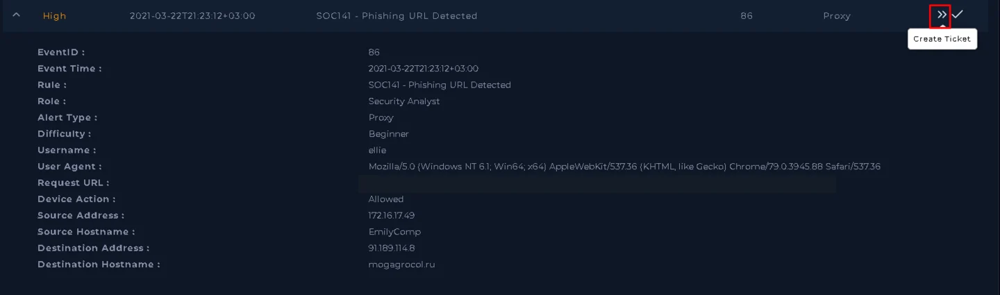
No Case Management, iniciei o playbook com Start Playbook.
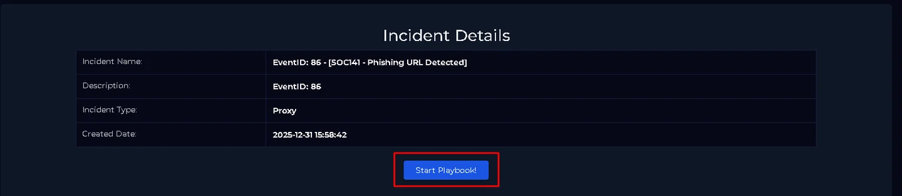
2. Leitura do alerta
Voltei a Monitoring → Investigation Channel para revisar o alerta original.
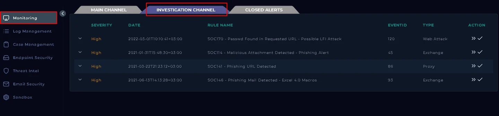
O alerta registrava a estação EmilyComp como origem, o IP
91.189.114.8 como destino e a ação como
Allowed.
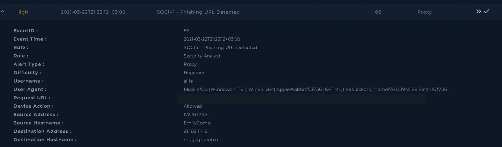
3. Reputação da URL
Identifiquei a URL solicitada no alerta. O domínio observado foi
mogagrocol[.]ru.
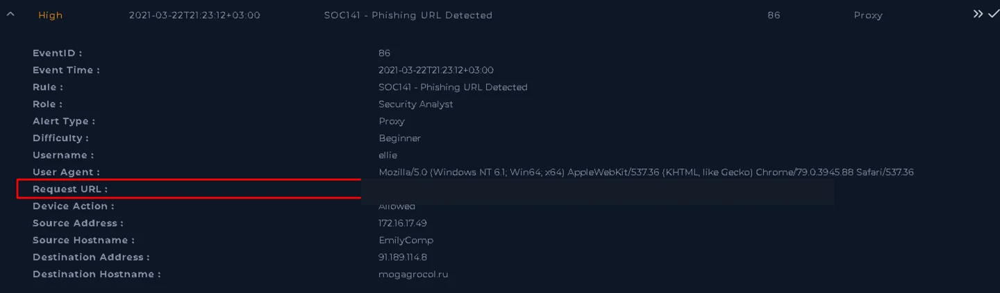
Consultei a reputação da URL no VirusTotal. A captura mostra classificações como Phishing, Malicious e Malware.
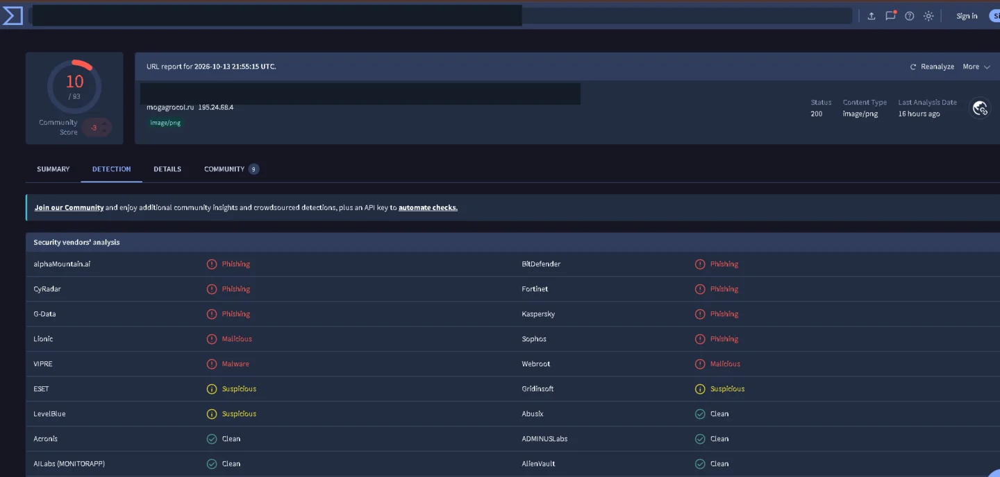
4. Correlação com os logs de proxy e firewall
Identifiquei o endereço de destino no alerta.
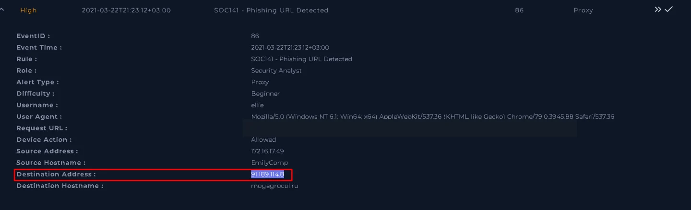
Busquei o IP de destino no Log Management para correlacionar os eventos.
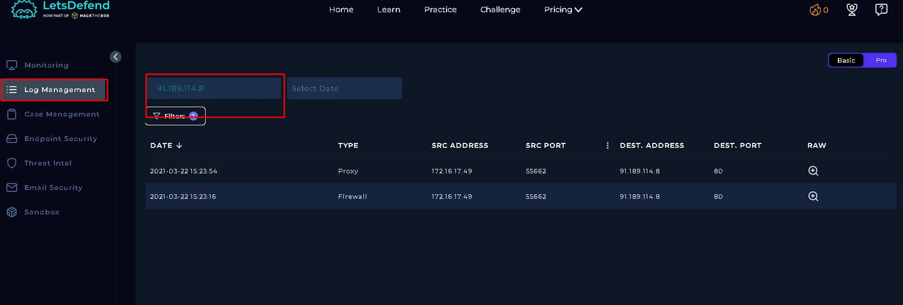
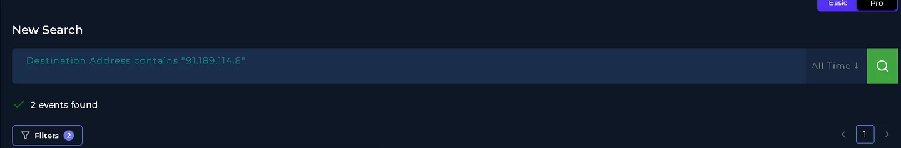
5. Investigação do endpoint
Identifiquei a origem nos registros de proxy.
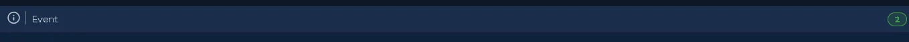
Consultei o endereço de origem no Endpoint Security.
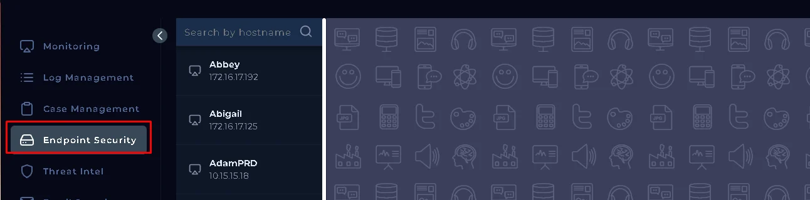
O endereço de origem estava associado à estação EmilyComp.
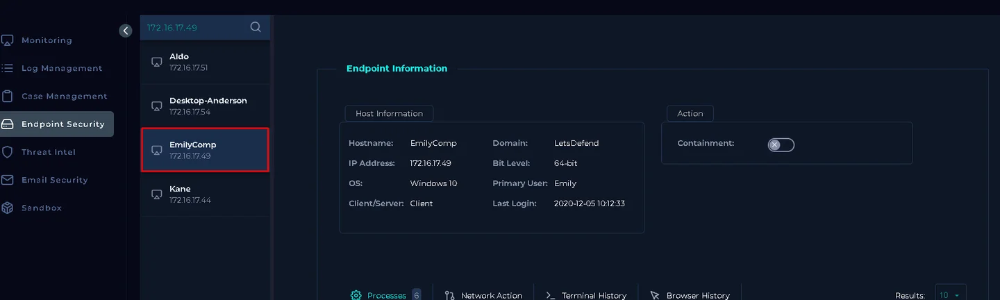
Revisei o histórico do navegador e os processos do endpoint.
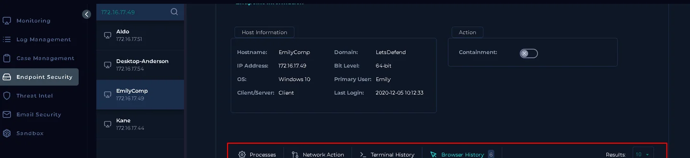
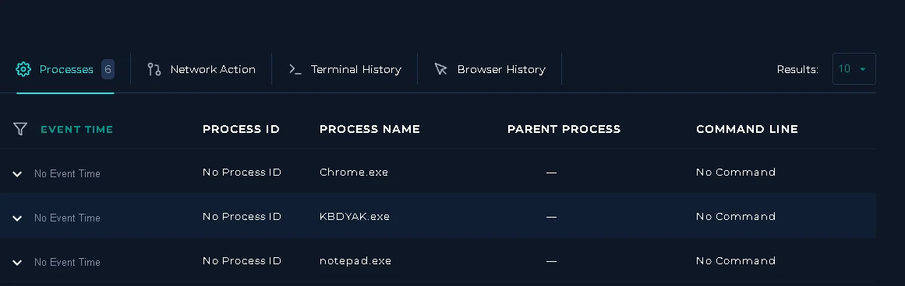
O histórico e a lista de processos apresentaram atividade suspeita. Marquei o host como contaminado no exercício.
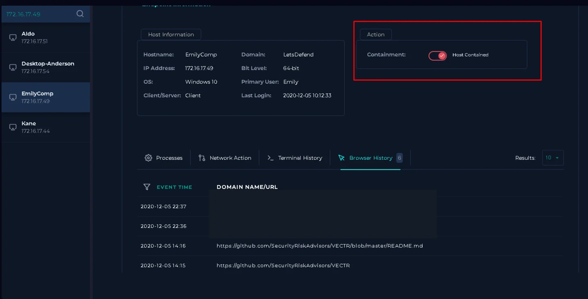
6. Registro no playbook e classificação
Voltei ao playbook para registrar os resultados e os indicadores verificados.
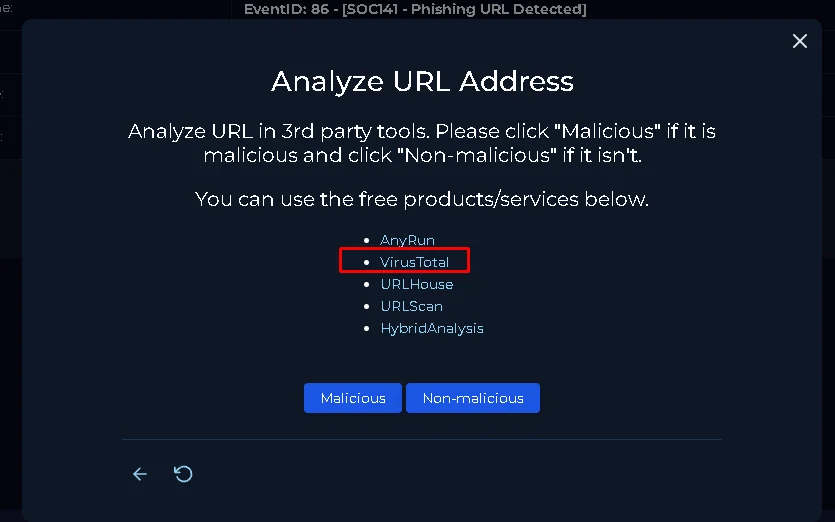
Registrei a verificação de acesso aos endereços investigados.
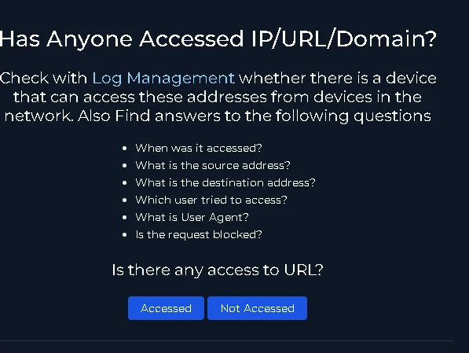
Adicionei ao playbook a URL suspeita como indicador.
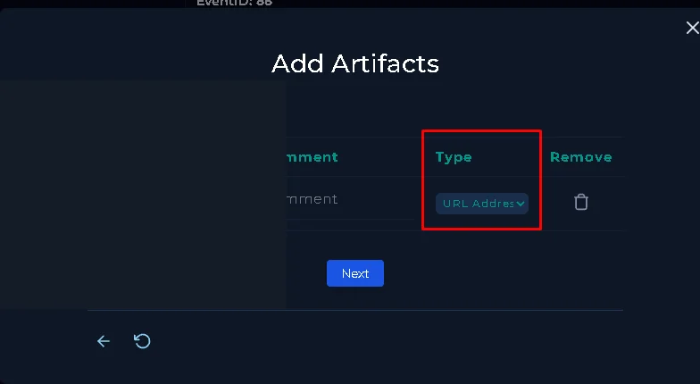
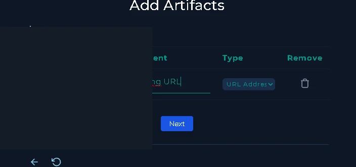
Registrei também o IP de destino.
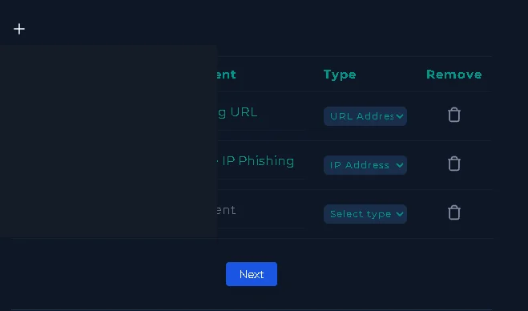
Revisei o resultado antes de encerrar o chamado.
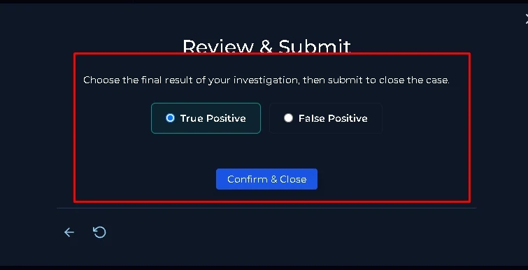
Nota enviada no playbook
Analysis identified that endpoint 172.16.17.49 attempted to access a malicious URL (mogagrocol[.]ru). Log analysis showed that the outbound request was allowed. The incident was escalated to the L2 security team for further investigation.MITRE ATT&CK
Mapeamento indicativo, não confirmação do vetor inicial.
- T1204.001 · User Execution: Malicious Link
- T1566.002 · Phishing: Spearphishing Link
Lições aprendidas
- Confirmar o acesso nos logs de proxy e firewall, não apenas pelo alerta.
- Correlacionar o IP de origem com o endpoint e verificar histórico de navegação e processos.
- Registrar os indicadores e o motivo do escalonamento no playbook.
Exercício simulado. Algumas capturas foram recortadas ou tiveram campos ocultados.